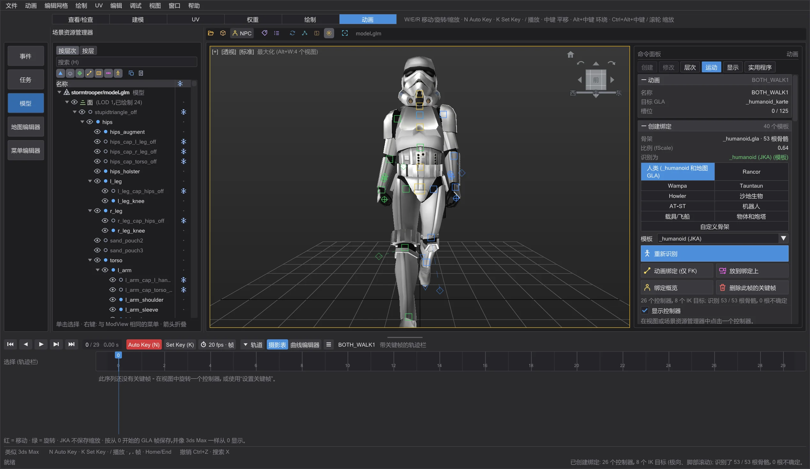
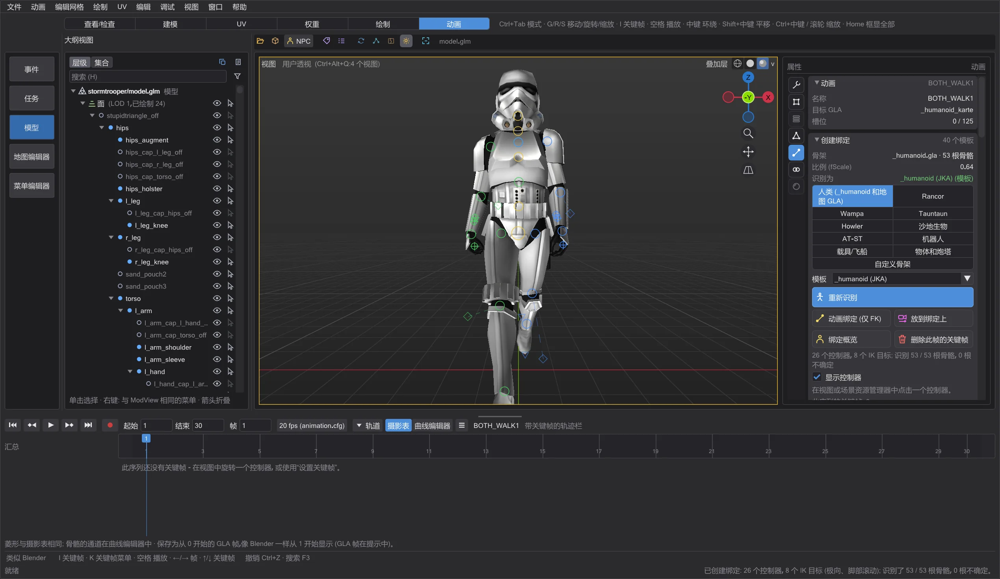

模型选项卡: 动画区域的面板
动画区域的右侧面板按工作顺序显示各组: 序列及其目标、绑定、预设、编辑现有动画、从其他骨架传递、IK/FK、附加物以及为游戏生成。

各组及其选项卡#
在该区域指定的选项卡 (像 3ds Max 时为 运动, 像 Blender 时为 骨骼) 中, 所有组依次排列: 动画、创建绑定、预设、编辑现有动画、传递 (重定向)、IK/FK、附加物和预览、为游戏生成, 其后是 自动物理、姿势、残影、运动路径、曲线和动画工具、姿势库、GLA (骨架和动画)、animation.cfg 和 目标 GLA 和槽位。单击标题可折叠该组。其他选项卡显示各自的部分: 层次 显示绑定、IK/FK 和附加物, 实用程序 显示为游戏生成、姿势库、GLA、animation.cfg 和槽位 (像 Blender 时为 约束 和 数据)。动画 给出正在处理的序列、目标 GLA 以及已占用的槽位数。摄影表和曲线编辑器在时间轴中打开。
像 CAT 一样的 设置模式 和 动画模式: 运动 面板顶部的开关 (Ctrl+Shift+M; 像 Blender 时为编辑模式 / 姿态模式, 按 Tab) 将组分开。设置模式包含创建绑定、附件、为游戏构建、GLA、animation.cfg、目标 GLA 和槽位; 角色处于 GLA 的基础姿势, 不会设置关键帧 - K、Auto Key、G 和 R 会说明原因。动画模式包含序列、预设、编辑、传输、IK/FK、自动物理、姿势、运动路径、曲线和姿势库。残影和骨骼显示位于 显示 选项卡。加载后, 角色有序列或绑定时为动画模式, 否则为设置模式。与 3ds Max 相同, 骨骼从一开始就可见、可选、可旋转, 无需控制绑定: 单击选择骨骼 (也可穿过蒙皮), E 旋转, Set Key 和 Auto Key 设置关键帧。

创建绑定: 模板#
表格显示骨架、其比例 (fScale) 以及识别出的模板。基础游戏的骨架 (人类、Rancor、Wampa、Tauntaun、Howler、AT-ST、机器人、载具和飞船) 以及其他程序的绑定都有模板。下方的选择可设置其他模板或 自定义骨架 (此时程序会建议链, 可在 绑定概览 中修改)。传递动画时, 模板还决定目标的链。创建控制绑定 创建带 IK 目标、极向和脚部滚动的绑定; 动画绑定 (仅 FK) 创建只有旋转控制器的绑定。与 CAT 绑定相同, 创建控制绑定 同时把序列的动画从 FK 转到 IK 放到绑定上: 帧变为控制器上的关键帧, 手脚跟随其 IK 目标和极向, 动作看起来不变 (消息会给出最大偏差)。之后在任意帧上操作控制器 - 移动手或脚的目标、极向 (肘、膝) 或滚动脚部; 放到绑定上 对之后加载的动画执行同样的操作。
在 创建控制绑定 之后使用 动画绑定 (仅 FK): 序列中处于 IK 的肢体会先在每一帧烘焙为 FK 关键帧 (角色的每个序列都会处理), 然后移除 IK 轨道 - 动作完全不变, 每个旋转控制器都能旋转其骨骼。Ctrl+Z 一步恢复 IK 轨道、IK 目标和极向。创建控制绑定 会重新打开 IK 目标, 并在每个序列中把肢体重新设为 IK - 其 FK 关键帧像首次创建时一样转到 IK 目标和极向; 一次 Ctrl+Z 即可撤销。
预设和现有动画#
预设: 设计中的八个类别 (站立、行走、跑步、后退、蹲伏、跳跃、战斗、手势) 始终显示, 其后是 其他; 还没有预设的类别会显示简短提示。在列表中选择预设 - 旁边显示来源和许可。行走 和 跑步 中还有自带生成器的 行走 (生成) 或 跑步 (生成): 选中后列表下方显示 速度 和 手臂摆动, 生成器 显示其余设置 (姿态、步长、摆胯、起伏、测量)。在角色上预览 加载或生成, 传递到角色的骨架并播放; 应用到角色 (重定向) 将其放到 目标槽位; 右键单击条目也提供这些命令。编辑现有动画: 将帧精简为关键帧 把序列的帧变为关键帧 (选项可将其限制为所选骨骼或某个范围), 烘焙到 GLA 把编辑后的序列作为 GLA 的帧写回目标的槽位。传递 (重定向): 选择来源或导入动画, 在表格中检查链, 然后主按钮把结果放到槽位; 脚部滑动 显示脚滑动的距离。
IK/FK、附加物、生成#
IK/FK 每个肢体一行。像 3ds Max 时, 右侧的按钮显示状态并切换 (抓住手或脚 = IK, 旋转骨骼 = FK) - 与 CAT 肢体的 IK/FK 相同, 从当前帧起直到下一次切换, 并先匹配另一侧 (Match IK and FK), 姿势不会跳变; 像 Blender 时有一个从 IK 到 FK 的滑块和两个无跳变捕捉的按钮。下方可设置所选肢体的空间、脚部滚动和关键帧。附加物和预览 列出角色上挂接的内容及其播放的内容: 挂接的模型、主要序列和次要序列。为游戏生成 显示 根位移 (序列中骨盆在地面上移动的距离), 并生成带 animation.cfg 的目标 GLA。游戏会播放这段移动, 但不会移动角色的原点: 脚本必须同时设置 SET_ORIGIN 和后续动画。